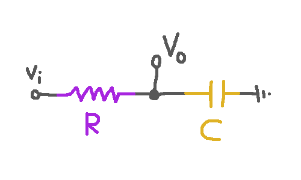

A Signal-Processing Cheatsheet
These are some notes to myself about linear filters, both continuous and discrete.
Continuous Signals
Fourier tells us that all signals $\R
\to \C$ are sums of periodic functions $\lambda t . e^{2\pi i f
t}$, and all linear time-invariant transformations $F : (\R \to
\C) \to (\R \to \C)$ are just fancy ways of independently
adjusting the amplitudes or phases of all the periodic components
of a signal. So we are interested in the frequency and phase
response those particular transformations that are easy to
implement.
Low-pass Circuit
Note that $\uOm = \uV/\uA$ and $\uA = \uC /\us$ and $\uF = \uC/\uV$.
Suppose we have an input signal
\[ \lambda t . V_i(t) : \R \to \uV \]
or we can just squint and take the time dependence as implicit and say
\[ V_i : \uV \]
Suppose we have a circuit with a resistor with resistance $R :
\mathsf{ohm}$ and a capacitor with capacitance $C :
\mathsf{farad}$.

Ohm's law tells us $V = IR$, so
\[ I = (V_i - V_o)/R : (\uA = \uC/\us = \uV/\uOm)\]
We also know that that current builds up charge on the capacitor:
\[ {d\over dt} q = I : \uC/\us\]
and the voltage across the capacitor is proportional to the charge:
\[ V_o = q/C : (\uC/\uF = \uV)\]
Putting these facts together, we find
\[ {d q\over dt} = (V_i - q/C)/R : \uC/\us \]
\[ R {d q\over dt} = V_i - q/C : \uV \]
Now if we assume
\[f : \ucy / \us \qquad k : \C \qquad 2\pi : \ur / \us \qquad i : 1/\ur \]
and
\[V_i = \bar V_i e^{2\pi i f t}:\uV \qquad V_o = k V_i: \uV \]
we find
\[ q = C V_o = C k V_i = C k \bar V_i e^{2\pi i f t} : \uC \]
and so
\[{d q\over dt} = 2\pi i f C k \bar V_i e^{2\pi i f t} : \uC / \us \]
and so
\[ R {d q\over dt} = V_i - q/C : \uV \]
becomes
\[ R \cdot 2\pi i f C k \bar V_i e^{2\pi i f t} = \bar V_i e^{2\pi i f t} - k \bar V_i e^{2\pi i f t} : \uV\]
and this simplifies to
\[ R \cdot 2\pi i f C k = 1 - k : \C\]
\[ (1 + R \cdot 2\pi i f C) k = 1 : \C\]
\[ k = {1\over 1 + 2\pi i RC f} : \C\]
\[ = {1-2 \pi i RC f\over 1 + (2\pi RC f)^2} : \C\]
\[|k| = {1\over \sqrt{1 + (2\pi RC f)^2}} = {1\over \sqrt{1 + R^2C^2\omega^2}}\]